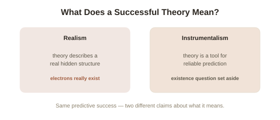

Chapter 4: Scientific Realism vs. Instrumentalism
Two chapters have shown that evidence never fully pins down one unique theory, and that a failed test never cleanly points at one specific culprit. Both problems raise a more basic question that's been quietly sitting underneath the whole topic: when a well-tested scientific theory works, what exactly is it doing — telling you what the world is actually, literally like, or just giving you a reliable tool for predicting what you'll observe?
Realism: theories describe a real, mostly hidden world
Scientific realism holds that mature scientific theories are approximately true descriptions of a mind-independent reality — including the parts you can't directly see. When a theory says electrons exist and have a specific charge, realism says: there really are electrons, out there, with that charge, whether or not any human ever observes one directly. The strongest argument for this position is sometimes called the no-miracles argument, advanced by philosopher Hilary Putnam: the extraordinary predictive success of modern science — landing spacecraft with pinpoint precision decades in advance, engineering devices that work exactly as theory says they should — would be a bizarre coincidence, almost a miracle, if the underlying theories weren't at least approximately describing something real about how the world is actually structured. It's hard to explain a GPS satellite correcting for relativistic time dilation exactly as predicted if there's nothing real that the theory of relativity is actually tracking.
Instrumentalism: theories are tools, not descriptions
Instrumentalism takes the opposite position: a scientific theory's job is to organize observations and generate accurate predictions — full stop. Whether unobservable entities like electrons "really exist" the way a chair or a tree does is treated as either unanswerable or simply the wrong kind of question to ask of science. On this view, a theory is more like a well-built machine than a photograph of reality: you judge a machine by whether it works reliably, not by whether its internal gears resemble some deeper truth about the universe. This isn't a fringe position — it has a long, respectable history, including physicist Pierre Duhem (from Chapter 3) himself, who argued that physical theory's job is to "save the phenomena" — organize and predict observations economically — not to reveal metaphysical truth underneath them.

The strongest counter-argument to realism: theories keep getting replaced
Philosopher Larry Laudan mounted the most influential challenge to the no-miracles argument in 1981, called the pessimistic meta-induction (the argument that since past scientific theories, once considered well-confirmed and predictively successful, were later found to be fundamentally wrong about the unobservable entities they posited, current well-confirmed theories should be expected to eventually meet the same fate). His evidence was a long list of historical theories that were genuinely predictively successful in their time, and turned out to be false about the underlying reality they described — the theory of caloric (heat as an invisible fluid, which made real, working predictions before being replaced by the kinetic theory of heat), or 19th-century luminiferous ether theories (a medium once thought necessary for light to travel through, discarded after relativity). If predictive success didn't guarantee those theories were tracking real, existing entities, why should today's predictive successes guarantee it any more reliably for electrons or quarks? Realists have replied with a narrower version of their claim, sometimes called structural realism — arguing that even when old theories were replaced, the mathematical relationships and structures they got right (not necessarily the specific entities they posited) often survive intact into the replacement theory, so realism should be about preserved structure, not preserved objects.
Why most working scientists don't have to pick a side
It's worth noting explicitly that this debate almost never affects how science actually gets done day to day — a physicist calculating a satellite's orbit gets the identical correct answer whether they privately believe electrons are fully real entities or just useful predictive fictions. The disagreement is entirely about what a theory's success is telling you philosophically, not about which equations to use or which experiments to run. That's part of why it's stayed unresolved for so long: neither camp's practical predictions differ from the other's, so the usual scientific method of "test it and see" has no direct purchase on settling the argument at all.
Try this
Ideas for noticing or testing this in your own life.
- Pick an unobservable entity you take for granted (an electron, a gene, "the market") and ask yourself honestly: do you believe it's real in the way a chair is real, or do you treat it as a useful predictive concept without really settling the question?
- Try Laudan's pessimistic meta-induction on your own confident beliefs: pick something you're highly confident about today, and ask what a structurally similar belief looked like a century ago, in a field where it later turned out to be wrong.
Worth pulling on?
A few loose threads from this chapter — if any of these genuinely grab you, that's a good sign of where to go next.
- Whatever position you take here, it only matters if the underlying studies producing today's "well-confirmed" theories are actually trustworthy in the first place — and a huge, ongoing crisis in several fields has cast real doubt on exactly that. → The subject of the final chapter in this topic: the replication crisis.
- The realism/instrumentalism split closely tracks a similar divide in epistemology over what justification is actually for. → Already in the library: Epistemology covers reliabilism, a view with a similarly practical, results-first flavor to instrumentalism.